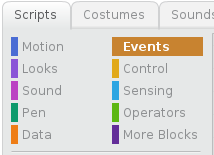
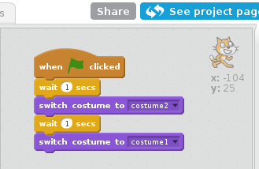

Changing the appearance of sprites
It’s fun to make sprites do things in Scratch. One of the ways you can make it look like your sprite is doing something is to change the sprite’s appearance by switching between the sprite’s costumes (e.g. a rocket sprite could have one costume where its landing gear is in place and a second costume with fire shooting out the back). You can change the appearance of a sprite in an existing project by creating a script to control the sprite’s costume changes.
To change the appearance of a sprite
- Create a new Scratch project with at least one sprite in it.
- From the Sprite list, select the sprite whose costume you want to change.
- On the Scripts tab of the Blocks palette, click Events.
- Drag a when green flag clicked block to the Scripts area.
- On the Blocks palette, click Control and drag a wait 1 secs block to the Scripts area to connect to the bottom of the when green flag clicked block.
- On the Blocks palette, click Looks and drag a switch costume to costume2 block to the Scripts area to connect to the bottom of the wait 1 secs block.
- Add another wait 1 secs block and switch costume to costume2 block.
- On the switch costume to costume2 block that you just added, choose costume 1 from the drop-down combo box.
- In the Stage area, click the green flag icon to run your script.
- Click File > Save Now to save your project.
A blue box appears around the selected sprite.
The Events code blocks appear.
The when green flag clicked block appears in the Scripts area.
The Control code blocks appear and the wait 1 secs block is connected to the when green flag clicked block in the Scripts area.
The Looks code blocks appear and the switch costume to costume2 block is connected to the wait 1 secs block in the Scripts area.
The last block is now a switch costume to costume1 block. Your Scripts area should look similar to the one in the image below.
After a one second pause, your sprite’s appearance changes by switching to its second costume. After another one second pause, your sprite’s appearance changes again by switching back to its original costume.
Your project is saved.
Now that you know how to change the appearance of a sprite by creating a script to control the sprite’s costume changes, you can make the sprites in all of your Scratch projects look like they’re doing things (e.g. a flying unicorn might have one costume with wings pointing up and a second costume with wings pointing down).